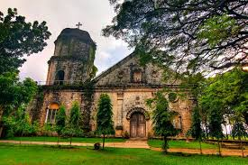
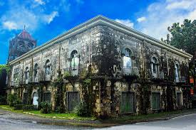
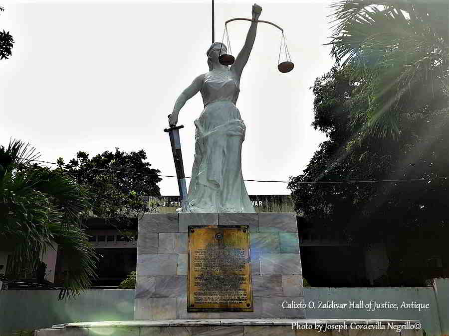
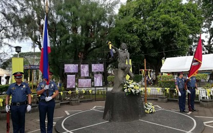

Heritage and Landmarks
✔️ Check that bucket list!
Antique is a province rich in history, culture, and tradition, where every town holds stories of the past waiting to be discovered. From centuries-old churches and colonial-era monuments to indigenous rice terraces and historical markers, the province preserves the heritage of its people and the events that shaped its identity. These landmarks are not only testaments to Antique’s enduring history but also vibrant sites for cultural appreciation, tourism, and education.
Exploring Antique’s heritage offers a journey through time—where the achievements, struggles, and traditions of its ancestors continue to inspire present and future generations. Whether it is walking along the streets of historic towns, visiting centuries-old churches, or witnessing the ingenuity of indigenous communities, Antique’s landmarks reveal the depth and diversity of its cultural landscape.
Historical Churches & Ruins

Anini‑y Church (St. John of Nepomuceno Parish)
A coral‑stone Spanish colonial church built in the 1800s and one of the province’s best‑preserved heritage churches.

Patnongon Church (Ruins of St. Augustine’s Church and Convent)
Remains of a Spanish‑era church and convent notable for neoclassical architecture; a historical ruin in Patnongon town.
Historical Markers & Monuments

Dr. Jose Rizal Monument (San Remigio)
Nearly century‑old monument honoring the national hero in San Remigio.

Calixto Zaldivar Bust (Hall of Justice, San Jose de Buenavista)
Monument to a notable political figure from Antique.

Evelio B. Javier Statue (San Jose de Buenavista)
A landmark honoring a key political leader and martyr during Martial Law.
Landmarks with Cultural or Touristic Heritage Value
Maniguin Island Lighthouse
Historic lighthouse guiding ships through the Cuyo East Passage off Culasi; an iconic Antique landmark dating back to the early 20th century.

Malandog Marker (Hamtic/San Jose area)
Marks the site of the first Malay settlement on Panay Island, often included in heritage discussions.